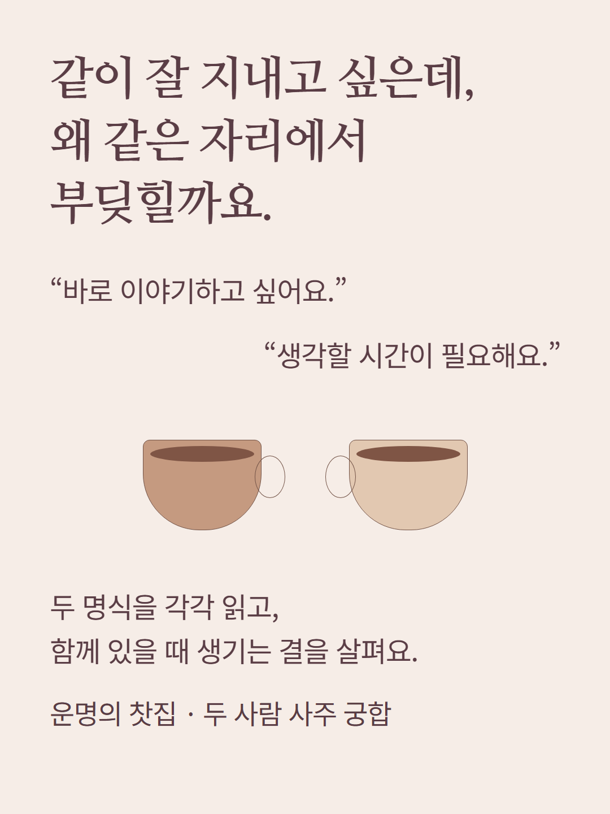
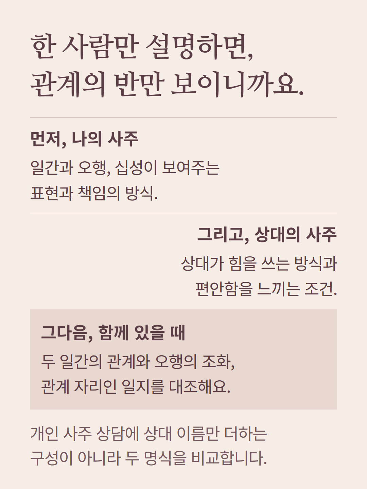
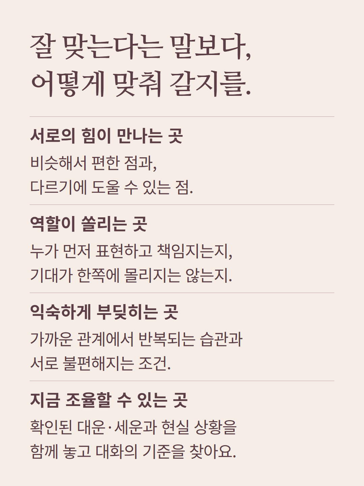
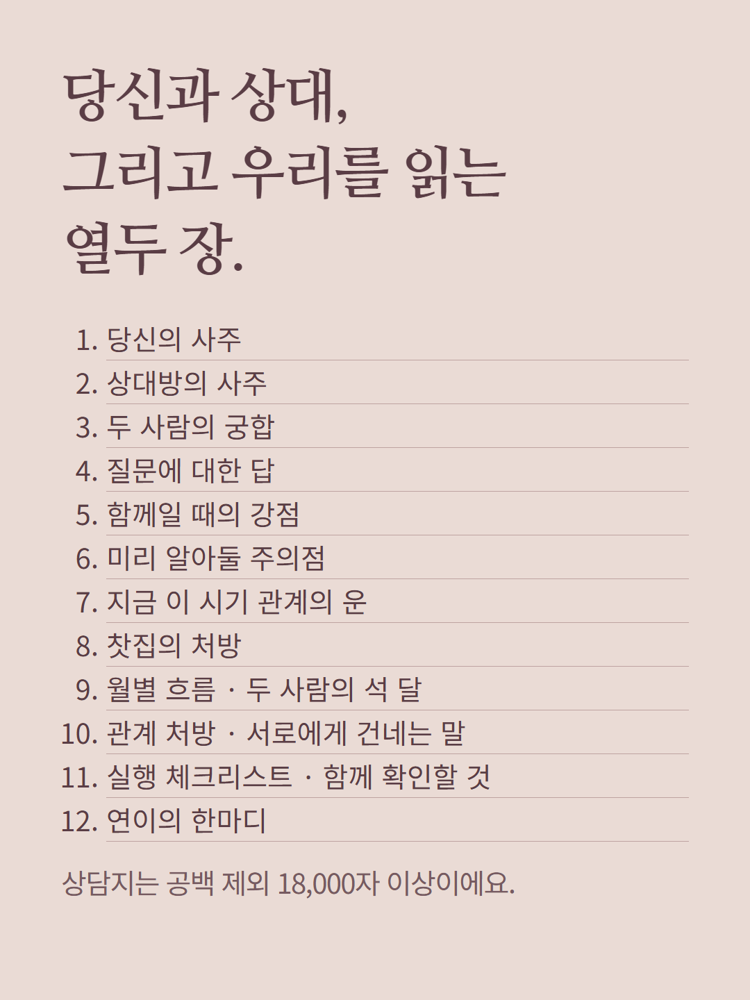
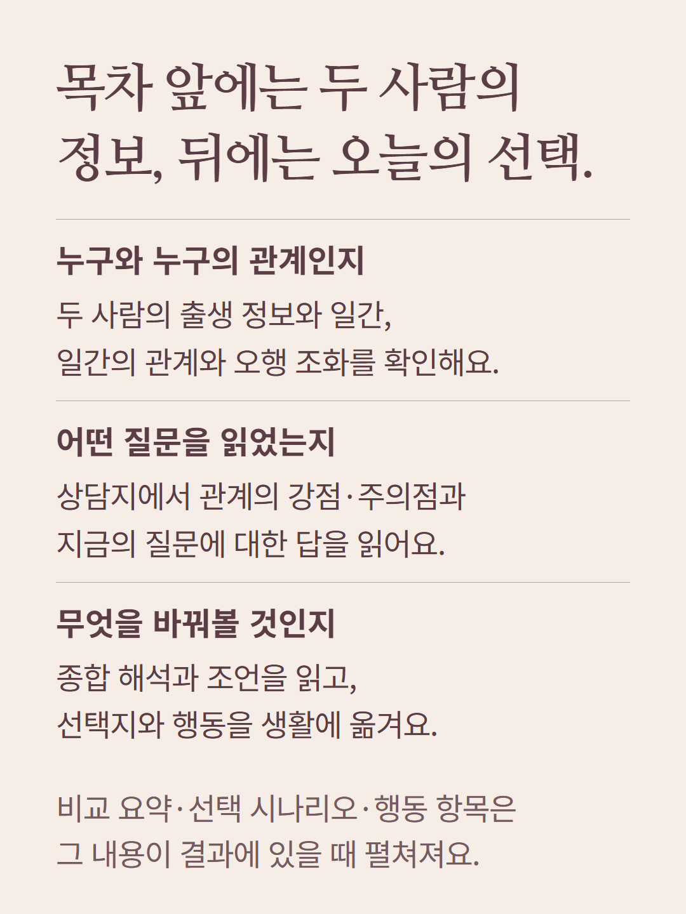
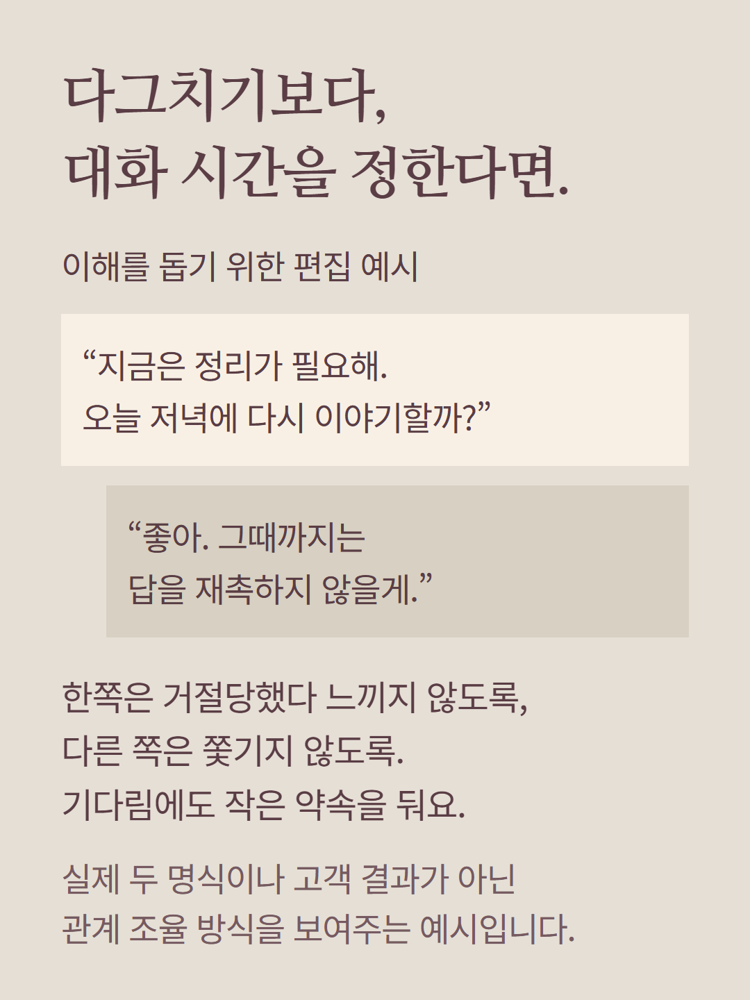
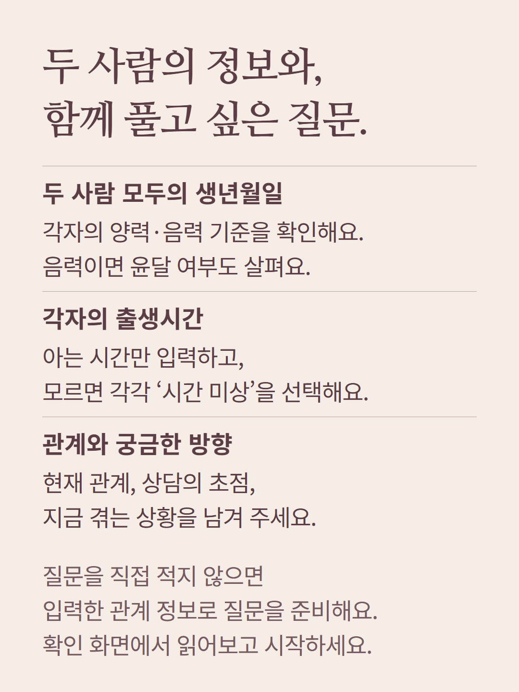
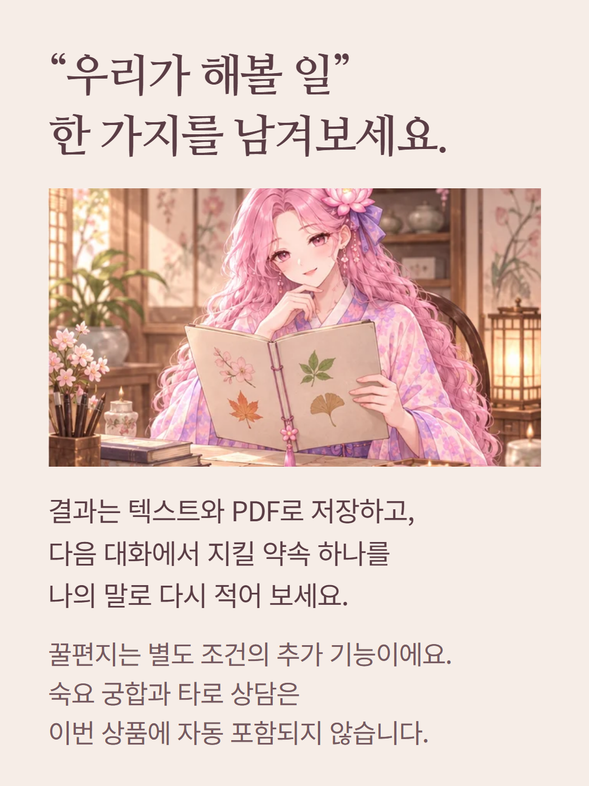
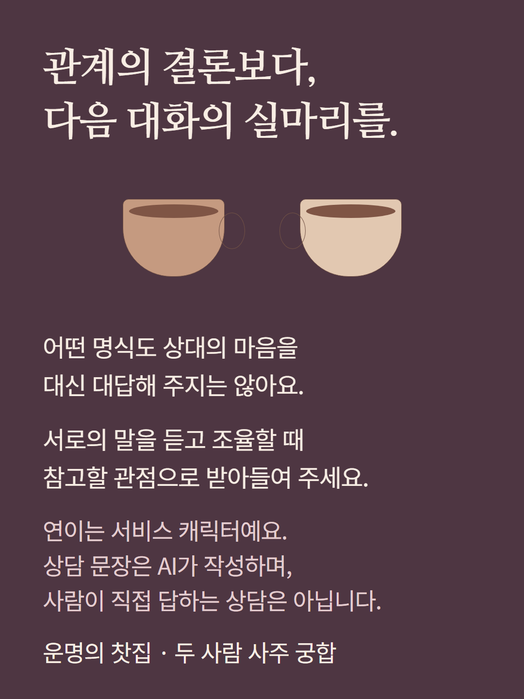

두 사람의 생년월일과 명식을 대조하는 별도 사주 궁합 상품입니다. 안내 속 도해와 대화는 이해를 돕기 위한 편집 예시이며 실제 고객 결과가 아닙니다. 출생시간 미상은 미상으로 처리하고, 시기 해석은 확인된 운 자료 범위에서 제공합니다. 강점·주의점·선택지 등은 결과에 내용이 있을 때 표시됩니다. 숙요 궁합과 타로는 별도 상품입니다. 연이는 서비스 캐릭터이며 AI가 상담 문장을 작성합니다.